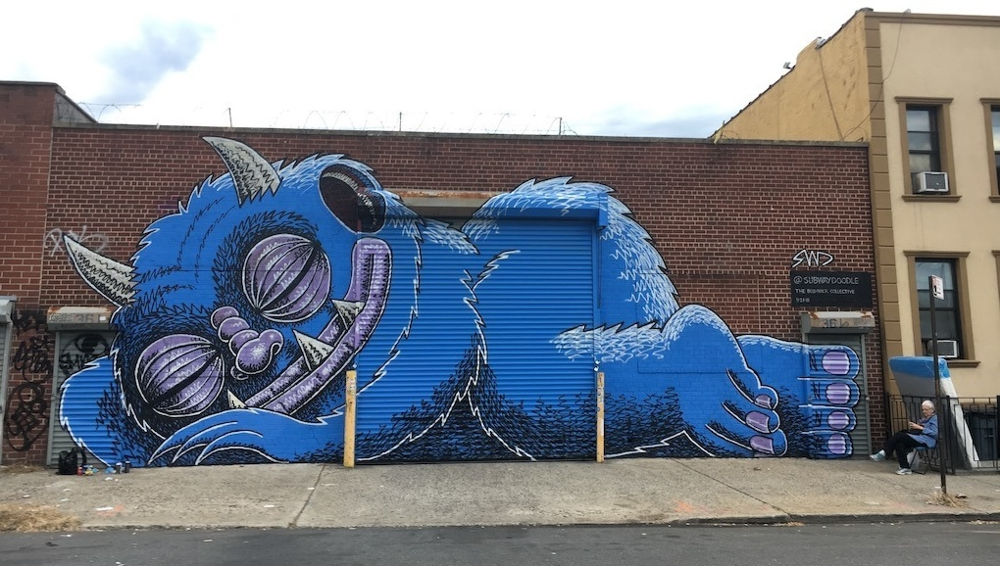
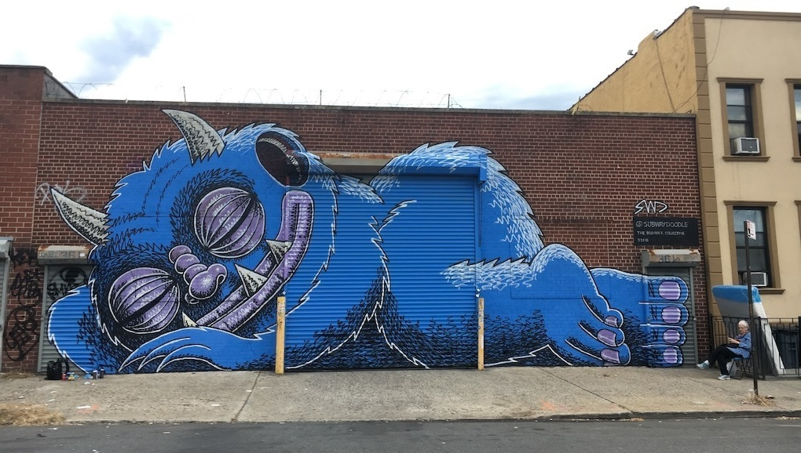

Welcome to your weekly scooop of street art, opps, events, and media curated by the BE team. Since 2012, Beautify Earth has produced, promoted, and advocated for art on the streets through local art productions, digital media, and program consulting. Header art by Subway Doodle.


It's happy days for the little monsters with Lady Gaga's new album dropping last week. I've followed Lady Gaga's musical journey from her early albums and especially after seeing her perform live at her 2009 Monster Ball Tour. I've always respected her ability to move between genres and see this album bringing different components of her past work together. I quite enjoyed listening on repeat as I put this week's scooop together and hope you do as well. - Moral

"Subway Doodle is a multimedia artist known for his New York City-centric illustrations and his whimsical street art. His most recognized creations are his iconic blue monsters. Subway Doodle is also an accomplished writer, director, motion designer, editor, and creative director. He is the owner of The Mint Farm, a creative marketing studio in Brooklyn that produces short-form content for television and social media. His work has been recognized with dozens of media industry awards and displayed at the Museum of the Moving Image."
March 13, 2025
Online @ 3PM EST
"This panel discussion will provide an opportunity to learn more and discuss Percent for Place, a coalition representing a diverse set of over two-dozen private, nonprofit, and philanthropic organizations dedicated to advancing policies that foster the creation, expansion, and improvement of civic infrastructure."
March 20, 2025
Manchester, UK
"In this up close and personal documentary, we follow the internationally acclaimed British street artist known only under the moniker ‘My Dog Sighs’ as he takes on his most ambitious project ever - ‘Inside’ - a vast immersive installation. With an initial objective to spend six months and a tiny budget to create it, his plans are put in peril by Covid lockdowns, break-ins, a cash crisis, and even a fire, as he battles to transform a treacherous derelict building."
March 17 - 23, 2025
Frankston, Australia
Nine featured artists painting large scale murals and projection artworks in the city during the week. Culminating at The Block Party in Stiebel Lane on Saturday 22 March. Book a walking tour or check out the map.

by Anne Tan-Detchkov, Project for Public Spaces -- "Only 5% of public space professionals say that public spaces are meeting community needs" according to the State of Public Space Survey Report, "detailing how public spaces are faring today, as seen through the lens of the public space professionals who plan, design, steward, and advocate for them every day."
by Lily Moayeri, Fine Art Globe -- "From Cleveland to Kabul, Women Artists Use Street Art to Inspire, Empower, and Connect Communities."
by Hedy Yang, The Justice -- "The surge of murals and street art in Boston resurfaces age-old questions about what is considered art, what it does for a community and who gets the space to create it."
by Boom Saloon -- "Each month, we publish four unique features from our global community: Excerpted reshares a feature previously published in our print magazine. Response furthers this conversation, highlighting creativity’s role in shaping a positive future. Alongside these, Add to Queue curates multimedia lists to encourage conscious consumption, whilst Save to List presents the world’s sustainable cities and communities as recommended by locals."
by The Guide Liverpool -- "John Culshaw is behind some of the city’s best-known public artworks including one dedicated to Nelson Mandela in L8 and the huge bright blue Liver Bird in the Baltic Triangle. His latest project is in Dovecot, in collaboration with Dreamkeeping Society who are running creative community workshops asking local residents to share their dreams...As part of a commission by Culture Liverpool, alongside Dreamkeeping Society’s activities, John will be holding weekly free sessions showing how he goes about making his giant murals."
by Joe Benham, Watford Observer -- "The first-ever strategy aiming to promote and secure high-quality public art in Watford over the next decade has been approved by Watford Council's cabinet."
Get your 5-min weekly scooop of street art opps, art, events, & media delivered straight to you
apply by: March 28, 2025
compensation: $2,180,000
location: Kansas City, MO, US
about: This rare and prestigious opportunity invites an artist or artist team from around the globe to transform Barney Allis Plaza into an iconic cultural landmark. The selected artist(s) will develop a cohesive, site-wide artistic vision that integrates artworks into the park’s design, fostering an immersive and unified experience.
apply by: March 30, 2025
compensation: $4,000
location: Lincoln, NE, US
about: The LUX Center for the Arts, located in Lincoln, NE, will be hosting its third bi-annual EMERGE mural festival in September of 2025. Three (3) new murals will be created in the University Place neighborhood, Lincoln’s first certified Creative District.
apply by: March 31, 2025
compensation: $14,000 CAD / ~$9,700 USD
location: Berwick, Nova Scotia, Canada
about: Art for art’s sake. This project is an opportunity for artists to follow their individual inspiration and showcase their most personal work. Whatever direction you wish to go—bold, beautiful, profound, thought-provoking— this is your chance to enjoy complete freedom of subject and style. The site is an expansive wall allowing large-scale work with great visibility on the town’s main commercial street.
apply by: March 31, 2025
compensation: N/A
location: Denver, CO, US
about: The Denver Chalk Art Festival is an award-winning event that will transform Denver's historical museum district into a colorful street museum.The event follows street painting traditions that originated in 16th century Renaissance Italy when artists began transforming pavement into canvas using chalk.
apply by: March 31, 2025
compensation: $22,000
location: Avon, CO, US
about: The Town of Avon, Colorado, requests proposals from multiple mural artists or artist teams to create an original mural or murals for the west facing exterior Stucco wall of the Seasons at Avon building. The mural will use a bright and cheerful color palette to evoke joy and positivity. Characters and scenes will be depicted in a whimsical, illustrative style to engage viewers of all ages. The selected artist is responsible for working with Town representatives in all aspects to include multiple iterations of design.
apply by: March 31, 2025
compensation: $2,500
location: Charleston, SC, US
about: Applications are now being accepted for the 2025 MELT Mural Fest. For the festival 6-10 muralists (or mural teams) will be selected to paint at the festival, which will take place September 11-14, 2025.
apply by: March 31, 2025
compensation: $2,904,000
location: Austin, TX, US
about: Multiple Austin-based artists and artist-led teams are invited to submit qualifications in consideration of collaboration, design, fabrication, and installation of new public art opportunities located throughout the new Concourse B and the new Arrivals and Departures Hall: two spaces for children, a sensory lounge, a mobility lounge and 18 restrooms.
apply by: March 31, 2025
compensation:N/A
location: The Hauge, Netherlands
about: Are you a young artist from a NATO member country? Would you like to create a mural for the upcoming NATO Summit in The Hague, the Netherlands, in June? Submit your design for a chance to win a unique opportunity to showcase your talent and creativity.
apply by: ongoing
compensation: n/a
location: Los Angeles, CA, US
about: Looking for a great wall for your art? Register your interest to paint BE's community walls on Venice Blvd.
Beautify Earth was built by and for our community with a shared vision of supporting local artists and art initiatives. Our team is committed to not only creating more art in communties but advancing practices of how and why we produce art in public space. Every donation makes a difference and allows us to support more artists and engage more communities. To discuss supporting at a larger scale or partnerships please email hello@beautifyearth.com.
Are you are a forward-thinking city, purpose-driven business, community-centered developer, or curious mind interested in street art or mural production? We're here to share our 13+ years of knowledge and experience to deliver the best art for your project.
Get your 5-min weekly scooop of mural & street art opps, art, events, & media delivered straight to you